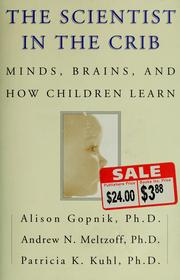

《摇篮里的科学家》
书·Alison Gopnik, Andrew Meltzoff, Patricia Kuhl, 1999·The Scientist in the Crib: What Early Learning Tells Us About the Mind

用婴幼儿研究说明学习、语言与心智如何发展。
- 作者
- Alison Gopnik, Andrew Meltzoff, Patricia Kuhl
- 年份
- 1999
- 难度
- 入门
- 类型
- 概览
- 所属学派
- 婴儿认知研究
- 核心理论
- 婴儿是小科学家、婴儿的统计学习、新生儿模仿
版本
- 中文版 《摇篮里的科学家》 艾利森·戈波尼克 · 袁爱玲 译 · 华东师范大学出版社 · 2004 豆瓣 7.1 分（25 人评价） 豆瓣页面 ↗
- 英文版 The Scientist in the Crib: What Early Learning Tells Us About the Mind Alison Gopnik, Andrew N. Meltzoff, Patricia K. Kuhl · William Morrow, first edition · 1999 Open Library ↗